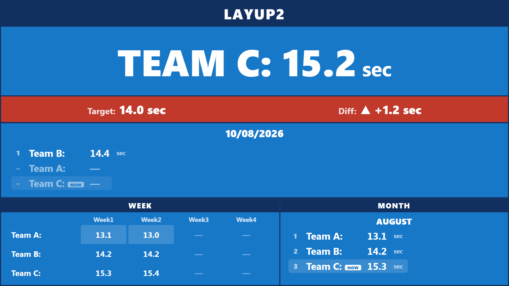
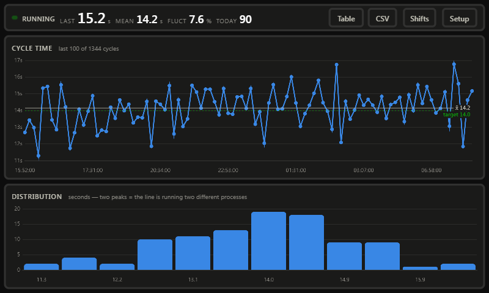
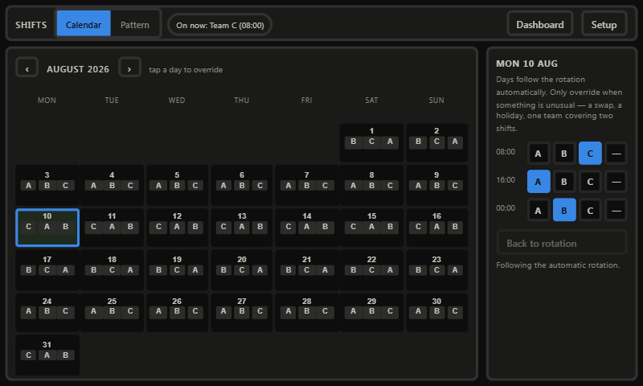

สถานี LAYUP2 — ระบบตรวจจับด้วยกล้องบน Raspberry Pi
กล้องส่องลงมาที่สายพาน เราลากกรอบสี่เหลี่ยมคลุมจุดที่ชิ้นงานวิ่งผ่าน ทุกครั้งที่มีชิ้นงานผ่านกรอบนั้น ระบบจะจับเวลาไว้ แล้วบันทึกว่าเป็นผลงานของทีมไหนตามตารางกะ
สิ่งที่ระบบตอบให้ได้:
ระบบใช้กล้องมองอย่างเดียว ไม่ต้องต่อ PLC ไม่ต้องเดินสายเซนเซอร์ และไม่ต้องต่ออินเทอร์เน็ต — ข้อมูลทั้งหมดเก็บอยู่ในเครื่องที่หน้างาน
| จอ | ใช้ทำอะไร | ใครใช้ |
|---|---|---|
| 40 นิ้ว (บนผนัง) |
บอร์ดเปรียบเทียบผลงานทีม | ทุกคนในสายผลิตดูจากระยะไกล ไม่ต้องกดอะไร |
| 7 นิ้ว (จอสัมผัสที่เครื่อง) |
กราฟละเอียด, ตั้งกล้อง, ตั้งกะ | หัวหน้ากะ และช่างเทคนิค |
บนจอ 7 นิ้ว มีปุ่มสลับหน้าอยู่มุมขวาบน: Table (ดูเป็นตาราง) · CSV (ดาวน์โหลดไป Excel) · Shifts (ตั้งกะ) · Setup (ตั้งกล้อง)

| ส่วนของหน้าจอ | ความหมาย |
|---|---|
| LAYUP2 (แถบบนสุด) |
ชื่อสถานี |
| TEAM C: 15.2 sec (ตัวเลขใหญ่) |
ทีมที่เข้ากะอยู่ตอนนี้ และเวลาที่ใช้ผลิตชิ้นล่าสุด — ตัวเลขนี้เปลี่ยนทุกครั้งที่มีชิ้นงานผ่าน |
| Target / Diff (แถบสี) |
เป้าหมาย และผลต่างจากเป้าหมาย เขียว อยู่ในเกณฑ์ (ไม่เกิน 1 วินาทีจากเป้า) แดง เกินเกณฑ์ — ช้ากว่าเป้ามากเกินไป เครื่องหมาย ▲ +1.2 คือ ช้ากว่าเป้า 1.2 วินาที (▼ คือเร็วกว่าเป้า) |
| วันที่ + รายชื่อทีม | ค่าเฉลี่ยของแต่ละทีมวันนี้ — ทีมที่ทำเวลาได้ดีที่สุดอยู่บนสุดเสมอ พร้อมเลขอันดับ 1, 2, 3 |
| WEEK |
ค่าเฉลี่ยรายสัปดาห์ในเดือนนี้ W1 = วันที่ 1–7 · W2 = 8–14 · W3 = 15–21 · W4 = 22–สิ้นเดือน ช่องที่ไฮไลต์ = ทีมที่ดีที่สุดของสัปดาห์นั้น |
| MONTH | ค่าเฉลี่ยรวมทั้งเดือน เรียงจากดีที่สุดอยู่บนสุด |
ถ้าทีมเพิ่งเข้ากะได้ไม่นาน ยังไม่มีชิ้นงานผ่านครบ ระบบจะยังไม่มีค่าเฉลี่ยให้คำนวณ ถือเป็นเรื่องปกติ รอสักครู่ตัวเลขจะขึ้นเอง

| ตัวเลข | ความหมาย |
|---|---|
| RUNNING | สถานะระบบ (RUNNING = ทำงานปกติ, PRODUCT = มีชิ้นงานอยู่ในกรอบ, NO CAMERA = กล้องหลุด) |
| LAST | เวลาของชิ้นล่าสุด (วินาที) |
| MEAN | ค่าเฉลี่ยของรอบที่แสดงบนกราฟ |
| FLUCT % | ค่าความผันผวน — ยิ่งน้อยยิ่งดี ใช้เทียบข้ามรุ่นสินค้าหรือข้ามความเร็วสายได้ เพราะเป็นค่าเปอร์เซ็นต์ |
| TODAY | จำนวนชิ้นที่ผลิตได้ตั้งแต่เที่ยงคืนวันนี้ |
แสดงทุกรอบเรียงตามลำดับเวลา — นี่คือจุดที่มองเห็นความผันผวนได้ชัดที่สุด
รูปแบบกราฟที่ควรสังเกต:
| ลักษณะกราฟ | มักแปลว่า |
|---|---|
| กระจายสม่ำเสมอรอบเส้น x̄ | สายนิ่งดี ปกติ |
| ค่อย ๆ ไต่ขึ้นเรื่อย ๆ | เครื่องมือเริ่มสึก หรืออุปกรณ์ร้อนขึ้น |
| กระโดดขึ้นเป็นขั้นแล้วค้างอยู่ระดับใหม่ | เปลี่ยนกะ เปลี่ยนวัตถุดิบ หรือเปลี่ยนการตั้งเครื่อง |
| ขึ้นลงเป็นจังหวะซ้ำ ๆ | มีอะไรบางอย่างเกิดขึ้นทุก ๆ กี่ชิ้น เช่น ต้องเติมของหรือเปลี่ยนถาด |
แสดงการกระจายตัวของรอบเวลา
ระบบตรวจจับด้วยการเทียบความสว่างที่เปลี่ยนไปในกรอบ ทำงานเร็วและไม่ต้องสอนระบบ แต่มีข้อแลกเปลี่ยนคือ อะไรก็ตามที่ขยับอยู่ในกรอบ ระบบจะนับว่าเป็นชิ้นงาน ความแม่นยำจึงขึ้นอยู่กับการวางกล้องและแสงเป็นหลัก
ปรับเฉพาะเมื่อการนับผิดพลาดเท่านั้น ค่าที่ปรับจะบันทึกทันที
| ค่า | เพิ่มค่าเมื่อ | ลดค่าเมื่อ |
|---|---|---|
| Enter ratio (ปกติ 0.15) |
เงาหรือสัญญาณรบกวนทำให้นับเกิน | ชิ้นงานเล็ก ระบบตรวจไม่เจอ |
| Exit ratio (ปกติ 0.07) |
ระบบไม่ยอมมองว่าชิ้นงานออกจากกรอบแล้ว | กรอบกะพริบว่างทั้งที่ชิ้นงานยังอยู่ |
| Pixel threshold (ปกติ 25) |
ภาพมีสัญญาณรบกวนหรือเป็นเม็ด | สีชิ้นงานใกล้เคียงกับสีสายพานมาก |
| Dwell (ปกติ 0.3 วินาที) |
มีการกะพริบสั้น ๆ แล้วถูกนับเป็นชิ้นงาน | ชิ้นงานวิ่งเร็วจนระบบนับไม่ทัน |
ช่องว่างระหว่างสองค่านี้คือสิ่งที่ป้องกันไม่ให้ชิ้นงานชิ้นเดียวถูกนับซ้ำสองครั้ง ถ้าตั้งให้ Exit สูงกว่าหรือเท่ากับ Enter ระบบจะแก้ค่าให้อัตโนมัติ
ใช้นาฬิกาจับเวลาจับด้วยมือ 20 ชิ้นติดกัน แล้วเทียบกับตัวเลขบนหน้าจอ นี่เป็นวิธีเดียวที่พิสูจน์ได้ว่าค่าที่ตั้งไว้เหมาะกับแสงและชิ้นงานจริงของเรา โดยปกติจะต้องปรับค่าอีกหนึ่งรอบหลังทดสอบ
ทีม A, B, C ทำงานวันละ 3 กะ กะละ 8 ชั่วโมง รวม 24 ชั่วโมง ระบบคำนวณตารางกะให้เองอัตโนมัติ ไม่ต้องกรอกทุกวัน จะแตะแก้เฉพาะวันที่มีเรื่องผิดปกติเท่านั้น

ไปที่ Shifts → Pattern
| ช่อง | ค่าปัจจุบัน | ความหมาย |
|---|---|---|
| Shift 1 / 2 / 3 start | 08:00 / 16:00 / 00:00 | เวลาเริ่มของแต่ละกะ กะละ 8 ชั่วโมง |
| Teams | A,B,C | ชื่อทีม เรียงตามลำดับการหมุนเวียน |
| Rotate every | 7 วัน | ทุกกี่วันที่ทีมจะเลื่อนไปกะถัดไป |
| Rotation anchor | วันอ้างอิง | วันที่ทีม A อยู่กะที่ 1 |
ให้เปลี่ยนวันอ้างอิงไปเรื่อย ๆ แล้วดูตาราง Next 14 days ที่อยู่ข้าง ๆ จนกว่าจะตรงกับทีมที่เข้ากะจริง — นี่คือเหตุผลที่มีตารางตัวอย่างนั้นอยู่
ลำดับกะยึดตามลำดับที่กรอก ไม่ใช่ตามเข็มนาฬิกา การกรอก 08:00, 16:00, 00:00 หมายความว่ากะที่ 1 คือกะเช้า 08:00 และกะที่ 3 คือกะดึก 00:00 ตรงกับที่หน้างานเรียกกัน
ไปที่ Shifts → Calendar แล้วแตะที่วันที่ต้องการ จากนั้นเลือกทีมของแต่ละกะ
เลือก — คือบอกระบบว่าไม่มีใครทำงานกะนั้นจริง ๆ
ส่วนวันที่ไม่ได้แตะเลย ระบบจะใช้ตารางหมุนเวียนอัตโนมัติตามปกติ
ระบบบันทึกชื่อทีมลงไปตอนที่ชิ้นงานผ่าน ดังนั้นการแก้ปฏิทินทีหลัง
จะไม่ไปเปลี่ยนตัวเลขของเดือนที่แล้วโดยที่เราไม่รู้ตัว
ถ้าต้องการให้แก้ย้อนหลังจริง ๆ ให้แก้ปฏิทินก่อน แล้วแจ้งช่างเทคนิคให้สั่งคำนวณใหม่
(คำสั่ง /api/shifts/recompute)
ถ้าไม่มีชิ้นงานผ่านนานเกิน 5 นาที ระบบจะถือว่าเป็นการหยุดสาย ไม่ใช่รอบการผลิตปกติ
| อาการ | สาเหตุและวิธีแก้ |
|---|---|
| หน้าจอขึ้น NO CAMERA | สาย USB ของกล้องหลุดหรือหลวม ให้เสียบใหม่ ระบบจะกลับมาเองภายในไม่กี่วินาที |
| ไม่นับเลย ทั้งที่มีชิ้นงานผ่าน | ค่า Occupancy ไม่เคยเกินขีดแดง ให้ลด Enter ratio หรือ ลด Pixel threshold หรือลากกรอบให้เล็กลงเพื่อให้ชิ้นงานกินพื้นที่ในกรอบมากขึ้น |
| นับซ้ำ ชิ้นเดียวเป็นสองชิ้น | เพิ่มระยะห่างระหว่าง Enter กับ Exit (ลด Exit ลง) หรือเพิ่มค่า Dwell |
| นับมั่ว ทั้งที่สายพานว่าง | มีอะไรขยับอยู่ในกรอบ เช่น เงา คน หรือแสงแดด ให้ย้ายกรอบก่อน ถ้ายังไม่หายค่อยเพิ่ม Pixel threshold |
| ค้างที่คำว่า PRODUCT ตลอด | แสงเปลี่ยนไปจากตอนที่ระบบจำภาพพื้นหลังไว้ ระบบจะแก้ตัวเองภายใน 5 นาที หรือกด Save ROI ใหม่เพื่อให้แก้ทันที |
| บอร์ด 40 นิ้วขึ้นทีมผิด | ไปดู Shifts → Pattern เทียบตาราง Next 14 days กับความจริง แล้วปรับวันอ้างอิง |
| บอร์ดขึ้น NO TEAM SCHEDULED | กะนั้นถูกตั้งเป็น — ไว้ในปฏิทิน ให้แตะที่วันนั้นแล้วเลือกทีม |
| บอร์ดมืดลงและขึ้น NO DATA | บอร์ดติดต่อกับเครื่องไม่ได้ ให้แจ้งช่างเทคนิค — อย่าเชื่อตัวเลขที่ค้างอยู่บนจอ |
| ทีมใดทีมหนึ่งขึ้น — ทั้งเดือน | ทีมนั้นไม่มีข้อมูลเลย ให้ตรวจว่าตารางหมุนเวียนครอบคลุมทีมนั้นหรือไม่ และตอนทีมนั้นเข้ากะ กล้องทำงานอยู่หรือเปล่า |
ระบบนี้วัดช่วงเวลาระหว่างชิ้นงานที่ผ่านจุดหนึ่งบนสายพาน ซึ่งตรงกับความหมายของความผันผวนของรอบเวลาพอดี แต่ไม่ใช่ระบบตรวจสอบคุณภาพ